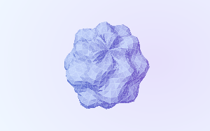

3D Reconstruction
We reconstruct the 3D geometry of objects and spaces from multiview images and depth sensors.
We study 3D reconstruction, visualization, and animation, as well as generative AI for multimedia and multimodal processing.
We reconstruct the 3D geometry of objects and spaces from multiview images and depth sensors.

We remove noise from scanned and generated models while preserving their geometry and detail. We also study how to assess the visual quality of 3D meshes.

We estimate facial shape and surface detail from images and sensor data to build personalized 3D models.

We use speech, expressions, and motion to animate 3D face models and create lifelike digital avatars.

We track facial landmarks and head motion in video across changes in viewpoint and expression.
National Research Foundation of Korea (Ministry of Education) · Sep 2025–Aug 2028